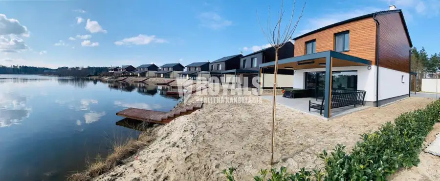
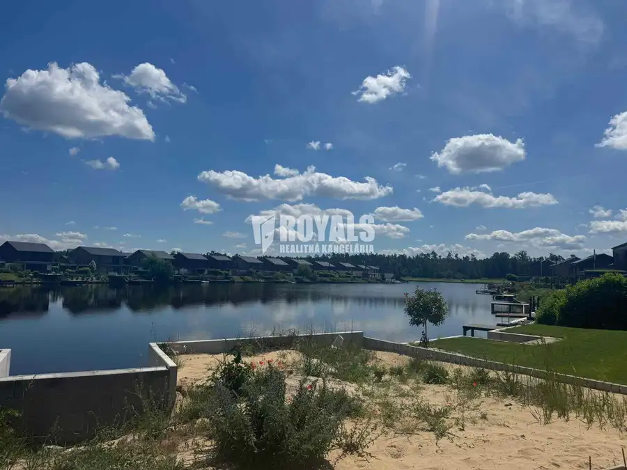
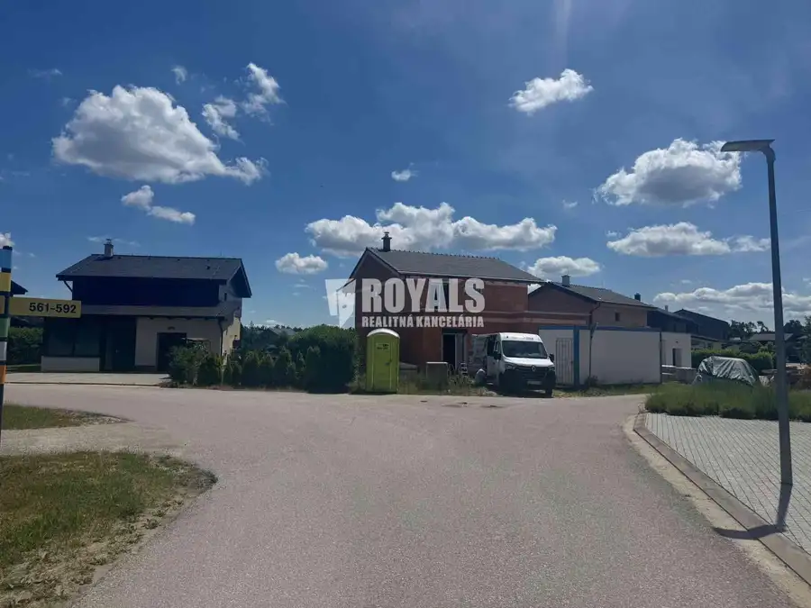
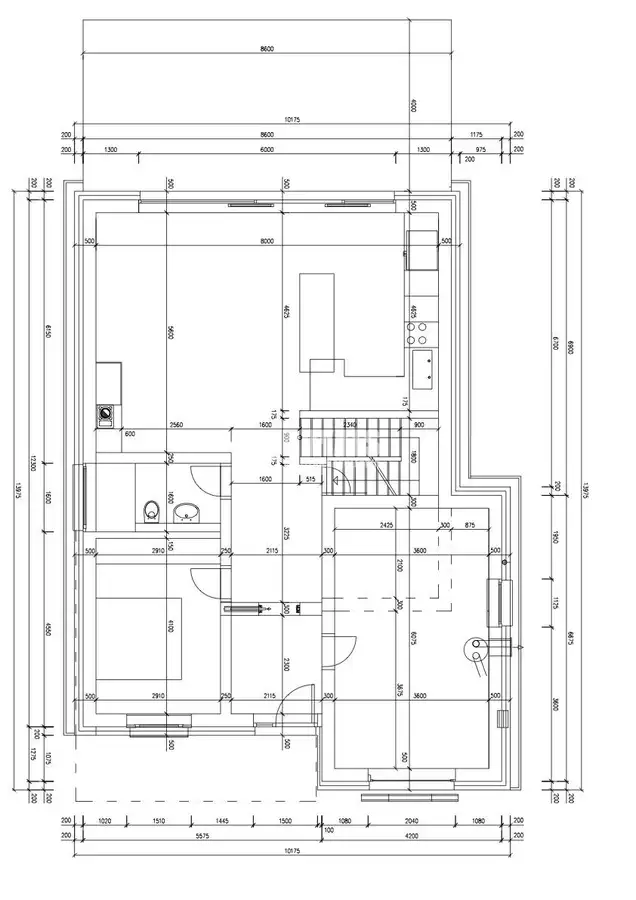
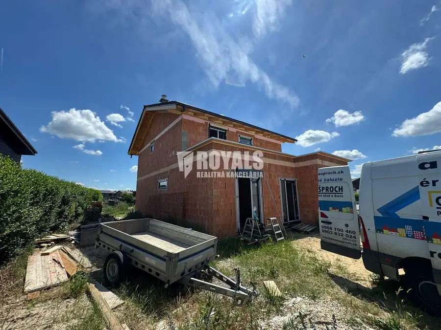
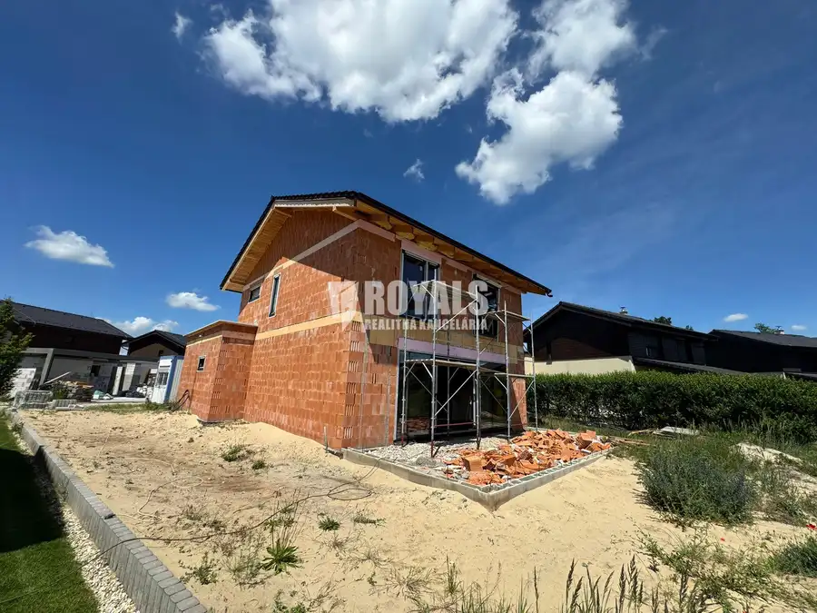
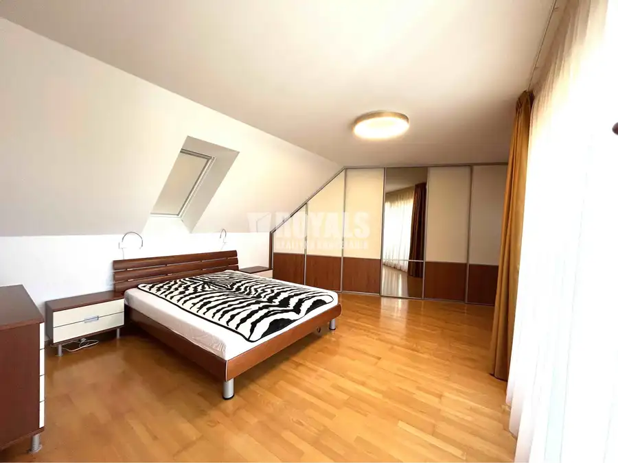
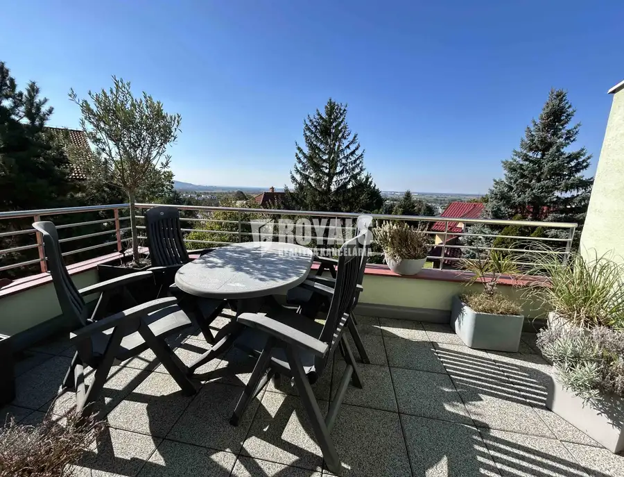
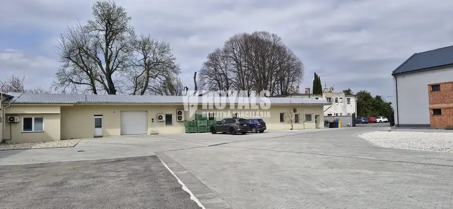

5i Vilka s privátnym mólom so vstupom do jazera, garážou, novostavba, Penati Golf Resort, Senica
Šajdíkove Humence






- Plocha166 m²
- StavNovostavba
- VlastníctvoFiremné
O nehnuteľnosti
V susedstve golfového rezortu Penati Golf Resort Šajdíkové Humence, v luxusnom, uzavretom, privátnom areáli s kontrolovaným vjazdom, priamo pri jazere, ponúkame na predaj priestrannú, tehlovú 2-podlažnú 5i vilku s terasou a záhradkou s privátnym vstupom priamo do jazera.Areál ponúka okrem 36-jamkového golfového ihriska Penati Golf Resort pestré možnosti na relax, aktívny oddych a kvalitné trávenie voľného času.Jedná sa o novostavbu, ktorá sa predáva v štádiu štandard, ktorý zahŕňa plávajúce podlahy, dlažby, obklady, kompletne hotové kúpeľne, elektrické podlahové kúrenie, bojler, elektrické rolety na poschodí, predprípravu na klimatizáciu, predprípavu na exteriérové žalúzie a krb.Pozemok bude odovzdaný s trávnatou výsadbou.Pridanou hodnotou je okrem súkromného móla a väčšieho pozemku aj pochôdzna terasa na poschodí s nádherným výhľadom na okolie a golfové ihrisko.Nehnuteľnosť je koncipovaná ako o 2-podlažný 5i rodinný s úžitkovou plochou 166 m2 a pozemkom 586 m2. Aktuálne je nehnuteľnosť v štádiu hrubej stavby a môže byť dokončená podľa Vašich predstáv.Dom je celoročne obývateľný. V lete okrem golfu padne dobre osvieženie v susediacom jazere. Dvakrát do roka je kontrolovaná kvalita vody. Nehnuteľnosť je vhodná aj ako investícia o ktorej prenájom a správu sa následne vie postarať priamo správca areálu.Dispozičné riešenie:1.NP – predsieň, príručná garáž na golfový vozík, kúpeľňa s toaletou a sprchovacím kútom, obývačka spojená s kuchyňou, samostatná spálňa, terasa.2.NP – 3 spálne (2 s výhľadom na jazero), jedna s vlastnou kúpeľňou so sprchovacím kútom, toaletou, samostatné WC.Konštrukcia stavby/štandard:Základová konštrukcia je riešená z monolitického železobetónu.Konštrukcia domu - stenový murovaný nosný systém tvorený z tehly Porotherm – Wienerberger 300mmStrop 1.NP – železobetónová monolitická konštrukcia. Obvodový plášť je zateplený kontaktným zateplením hr. 200 mm – biely polystyrén.Strešná konštrukcia – krov zo smrekového dreva s pohľadovými prvkami KHVhranoly – obsahuje 400 mm tepelnoizolačnej vrstvy (fúkaná PUR izolácia).Stropy v 2.NP sú zvýšené podľa strešnej roviny.Strešná krytina – Mediteran zenit.Podlahy skladba 1.NP – tepelná izolácia v hrúbke 120 mm,2.NP – tepelná izolácia – akustická , v hrúbke 50 mm.Poter - cementobetón. Všetky exteriérové výplne okenných a dverných otvorov sú tvorené hliníkovými aplastovými výplňami s izolačným trojsklom od Slovenského výrobcu Slovaktual (1.NP – 6 metrové zdvižno-posuvné dvere HST 77 SL)Elektrické podlahové kúrenie, bojler 150 l.Omietky – sádrové – zdravšie a vždy opraviteľné.Obloženie domu - Thermowood. IS : voda, elektrika, kanalizácia, optikaPredpríprava na klimatizáciu.Súčasťou záhrady je súkromný vstup do vody cez mólo.Odhadované mesačné náklady: 120 EUR (elektrika), 26 EUR (internet), voda podľa aktuálnej spotreby.Cena: 799.000 EUR s DPHKontakt: Janka KováčováMobil: 0905 821 777e-mail: kovacova@royals.sk***ROYALS*** realitná kancelária ponúka komplexné služby pri kúpe, predaji a prenájme nehnuteľností.Pri našej činnosti úzko spolupracujeme s našimi partnermi:služby notára - Notársky úradu JUDr. Martina Košťáliková, www.kostalikova.skprávne služby – Advokátska kancelária Fiľo & Partners s.r.o. www.akfp.skhypotekárne poradenstvo – p. Marián Pravda, www.fincentrum.comV cene nehnuteľnosti je zahrnutá provízia, ktorá zahŕňa nasledovné služby a poplatky:vypracovanie ZoBZ (zmluva o budúcej zmluve)- kúpna zmluva- poplatky za overenie podpisov u notára- kolky za štandardný návrh na vklad do katastra nehnuteľností- výpis listu vlastníctva na právne účely s kolkom- snímky z katastrálnej mapy- zabezpečenie kompletného právneho poradenstva- zabezpečenie hypotekárneho servisuOstatné informácie a obhliadky Janka Kováčová, mobil: 0905 821 777, kovacova@royals.sk
Parametre
- Druh
- Rodinný dom
- Dátum zverejnenia
- 07. 06. 2026
- Orientácia
- Južná
- Plocha pozemku
- 586 m²
- Počet garáží
- 1
- Počet izieb / miestností
- 5
- Počet nadzemných podlaží
- 1
- Rok výstavby
- 2026
- Stav nehnuteľnosti
- Novostavba
- Telekomunikácie
- Internet, Optická sieť
- Terás
- 2
- Terén pozemku
- Rovinatý
- Typ
- Predaj
- Typ konštrukcie
- Zmiešaná
- Vlastníctvo
- Firemné
- Vybavenie
- Terasa, Garáž, Sklad
- Vykurovanie
- Podlahové, Lokálne, Krb, Klimatizacia
- Zariadenie
- Zariadené kompletne
- Úžitková plocha
- 166 m²
Kde to je


Mohlo by Vás zaujímať

BytNové 1 500 €4i byt, kompletne zariadený na prenájom, balkón, terasa, garáž pre 2 autá + parking, Bratislava IV Záhorská Bystrica, Bratislava 4-izbový158.05 m²1. podlažie
BytNové 1 500 €Na prenájom kompletne zariadený 4i byt, balkón, terasa, garáž pre 2 autá + parking, Bratislava IV Záhorská Bystrica, Bratislava 4-izbový158.05 m²1. podlažie
Komerčné priestoryNové Cena na vyžádáníVariabilný, zateplený, vykurovaný skladový priestor so sociálnym zázemím, Koniarovce Koniarovce 140 m²